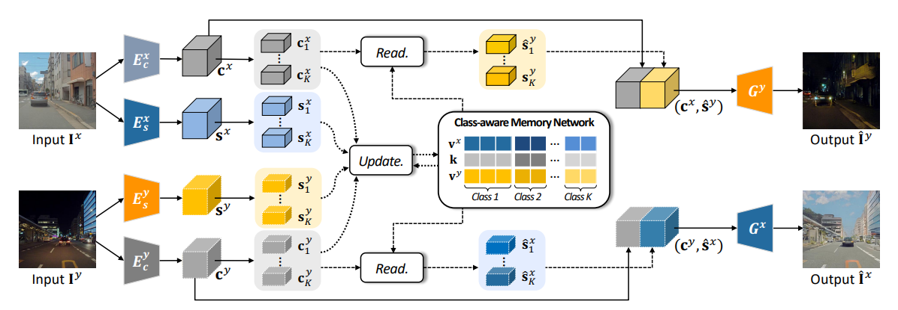
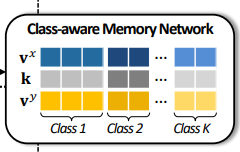
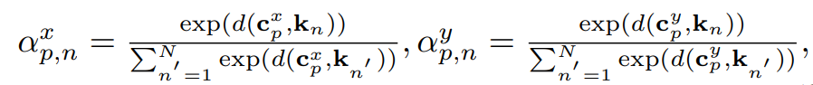
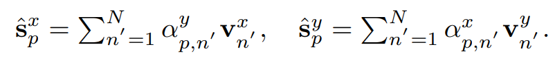
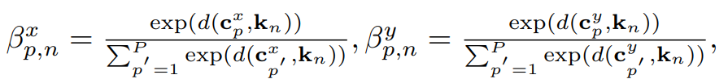
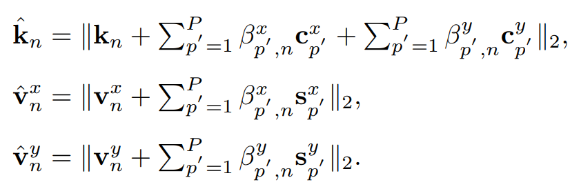
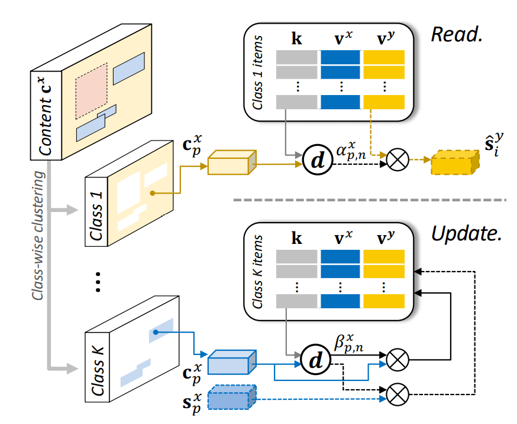
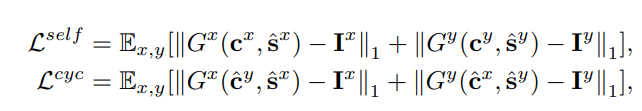
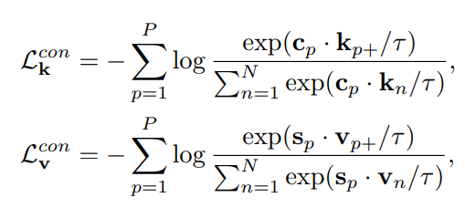

MGUIT

Class-aware Memory Network

结构理解
每个class下有\(N_k\)个item,所有class的item数之和为N，即一共有N个item。
满足 \(\sum_{k=1}^K N_k = N\)
对于每个class要用\(N_k\)个item的理解：
比如一个class为人脸，那么人脸上的眼睛、嘴唇、皮肤都是不一样的特征，因此需要用到多个item表示一个class
item的组成
每个item由( k , \(v^x\) , \(v^y\))组成
- k , \(v^x\) , \(v^y\) 的大小都是 1x1xC 其中C是通道数
- k用来检索item 大小1x1xC 方便与每个像素进行求余弦相似度 用来表示content feature
- \(v^x\)表示在 x domin 上的style feature
- \(v^y\)表示在 y domin 上的style feature
特征聚类
训练的时候，会用到数据集中的object annotations（对象注释比如物体的种类，物体的框的位置）来辅助。
每张图的特征(c,s)会被聚类为K类：（K就是这张图像的所有class）
(𝑐1,𝑠1),···,(𝑐𝐾,𝑠𝐾)
c1中有\(N_1^c\)个item s1中有\(N_1^s\)个item
\(c_k\)中 有\(N_k^c\)个item \(s_k\)中 有\(N_k^s\)个item
这些聚类后的信息read / update memory
Read
前置知识
假设每张图像大小为CxHxW ， 那么一个通道上面就有P=HxW个像素点 每个像素点的content feature 为 1x1xC
memory中有K个class，N个item 每个item有一个k 其中k的大小为1x1xC
余弦相似度的公式定义 \[ d(c_p , k_n) = \frac{c_pk_n^T}{|\left | c_p|\right|_2 |\left | k_n|\right|_2} \]
计算第p个像素点与第n个item的相似度权重
一共有P个像素点，第p个像素点的大小为1x1xC，记为\(c_p\)
一共有N个item，第n个item的k的大小为1x1xC，记为\(k_n\)
计算\(c_p\)与\(k_n\)的相似度，并在N的维度上求softmax作为每个kn的权重

- \(\alpha_{p,n}^x\)表示对于x domin上第p个像素点与memory中第n个item的k的相似度权重（属于第n类的概率）
- \(\alpha_{p,n}^y\)表示对于y domin上第p个像素点与memory中第n个item的k的相似度权重（属于第n类的概率）
计算风格特征\(\hat{s}\)
第p个像素点的风格特征就是 对每个item的style feature 进行加权求和 ， 其中权重是\(c_p\)与item的k的相似度权重

- \(v_{n}^x\)表示x domin上第n个item的style feature
- \(v_{n}^y\)表示y domin上第n个item的style feature
最终所有的p聚合成最后的特征图
update
update是求权重然后按权重更新（\(k\) , \(v^x\) , \(v^y\)）
计算第n个item的k与第p个像素点的相似度权重

与read的计算权重不同，update是在P的维度上求softmax作为每个p的权重（第n个类与哪些p比较接近）
更新（\(k\) , \(v^x\) , \(v^y\)）
对第n个item的content feature进行更新 加上每个像素点的content feature的加权和
对第n个item的style feature进行更新 加上每个像素点对应的style feature的加权和

k保存的content feature是两个domain共享的，所以一起更新
而v保存的style feature是两个domain单独的，所以分开更新。
更新步骤如下:

Loss Function
image-to-image translation network
1.Reconstruction loss( 重建损失)

- \(L^{self}\)是x的原始content feature与构建的x style生成的图像与原图越逼近 ， 使得x style更加精确表达x的风格
- \(L^{cyc}\)是将x内容特征与y风格特征产生的图像再用x风格特征产生的图像 与 原图逼近
2.Adversarial loss
目的是为了最小化两个不同功能之间的分布差异
我们采用了两种对抗性损失函数：
- content discriminato：Cx和Cy之间的内容对抗性损失函数
- 使得x的内容在y风格下仍旧保持原本的内容
- domain discriminator：X和Y领域对抗性损失函数
3.KL loss
使style的分布更接近先前的高斯分布
4.Latent regression loss
使得style和image之间的映射是可逆的
Class-aware memory network
Feature contrastive loss（特征对比损失）
对于每一个特征\(c_p\)(或\(s_p\))，我们将它最近的item \(k_p\)（或\(v_p\)）定义为正样本，其他样本为负样本。
到正/负样本的距离如如下方式惩罚
τ是控制浓度分布水平的温度参数
